jQuery源码分析一——核心
外层沙箱以及命名空间\$
整个 jQuery 代码包裹在 1 个匿名函数中，只暴露 2 个全局变量到 window 上。
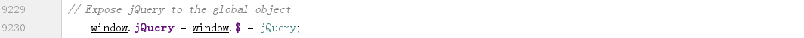
jquery 对象生成
通常，需要用 new 构造函数获取对象实例，但每次都使用 new 太麻烦，因此在构造函数内部 new，返回返回实例。
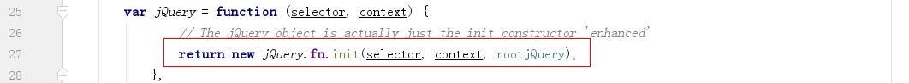
问题是，jQuery.fn.init 本身也是 1 个构造函数，那么如何才能使用到 jQuery 上的方法，需要（1）将实例方法全部定义到 jQuery.prototype 上；（2）定义 init.prototype 也为 jQuery.prototype。这样，jQuery.fn.init 生成的实例也能访问到全部方法。
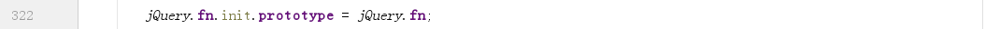
jquery 入口
jquery 把所有操作都包装在 jquery 函数中，jquery 函数就是统一的且唯一的入口，接受的参数经 jQuery.fn.init 包装成 jquery 对象。jQuery.fn.init 可以根据 12 种入参情况进行处理：
空（没有传参）
返回自身。DOM 元素
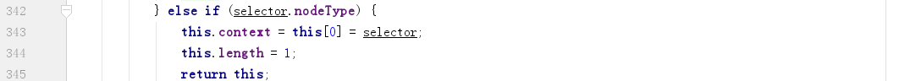字符串
可以细分为 7 种情况，如果是单独标签或 html 代码，会创建对应的 DOM 元素。如果是选择器，会通过复杂正则匹配获取对应的 DOM 元素包装成 jquery 对象。函数
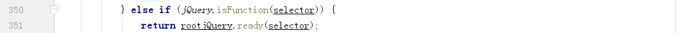jquery 对象
复制到当前 jquery 对象返回。其他任意值
调用 makeArray 方法作为当前 jquery 对象（类数组）的 1 个元素。
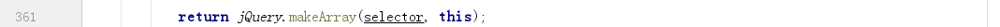
jquery 对象数据结构
在包装 DOM 对象基础上生成的新对象。
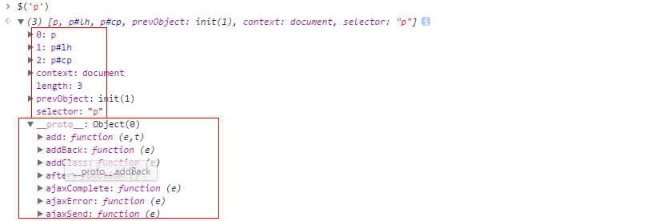使用数字索引访问即可得到对应的 DOM。
是类数组对象，可使用 slice 转为真正的数组。
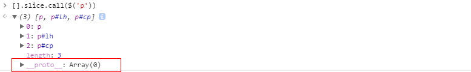
插件机制 extend
注意 extends 是 js 中的关键字，这里末尾没有 s。
\$.extend([deep], target, obj1, objN)。
如果只有 1 个参数，静态方法时扩展 jQuery 本身，原型方法扩展 jQuery 对象。
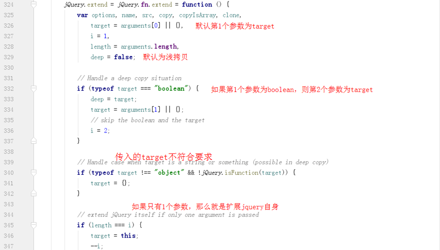
浅拷贝和深拷贝区别在于是否递归处理。
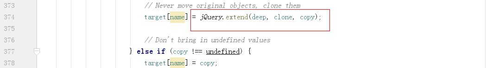
回溯机制
jQuery 内部维护着 1 个 jQuery 对象栈。每个遍历方法都会找到 1 组新元素（1 个 jQuery 对象），然后 jQuery 会把这组元素推入到栈中。每个 jQuery 对象都有 3 个属性：context、selector 和 prevObject，其中的 prevObject 属性就指向这个对象栈中的前一个对象，而通过这个属性可以回溯到最初的 DOM 元素集。
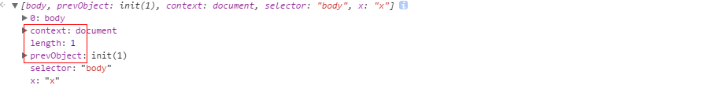
例如，在 not 方法源码中，会将新获取的 DOM 对象传入 pushStack，返回这个 DOM 对象的 jQuery 对象，并将当前 jQuery 对象保存为 prevObject。
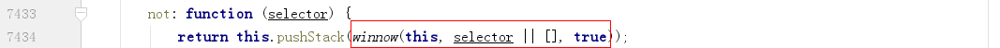
pushStack
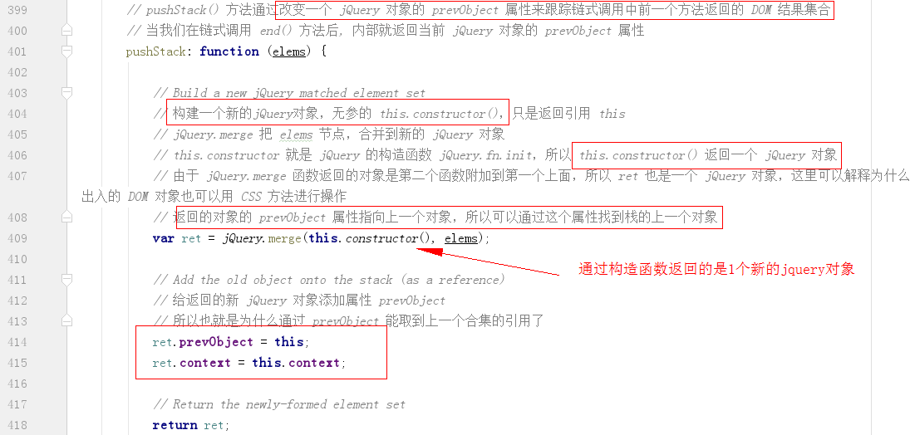
end
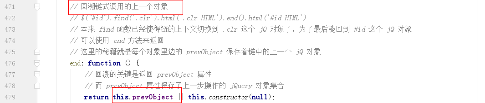